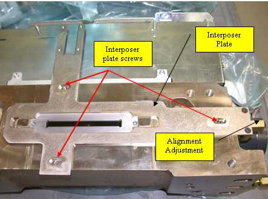
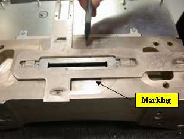
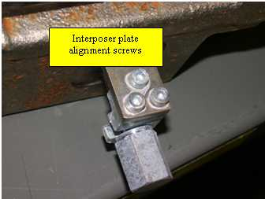
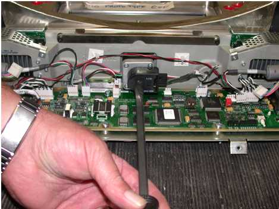
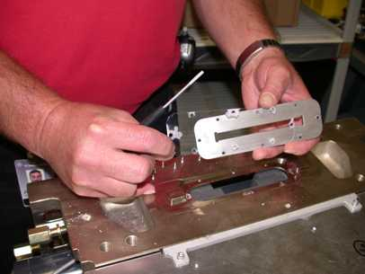

Operating Documentation
Direction 5193575-800, Rev# 5
LightSpeed 7.X Service Information - Adv
Operating Documentation |
| Required Persons | Preliminary Reqs | Procedure | Finalization |
|---|---|---|---|
| 1 | N/A | 60 mins | 20 mins |
Over time, the Lexan covering the collimator can get brittle and break apart leading to image quality problems. To prevent this from happening, removal of the Lexan is required
| NOTE: | This procedure applies to HP-60, -80, and -100 systems, as well to RT and VCT systems. |
| NOTE: | This procedure is only to be performed in conjunction with a Tube change, and only needs to be performed one time. |
| Last revised: | November 6, 2006 |
| Item | Qty | Effectivity | Part# | Manufacturer | |
|---|---|---|---|---|---|
| Standard FE Toolkit | 1 | - | - | - | |
| Loctite 242 (0.5 ml) | 1 | - | - | - | |
| Item | Qty | Effectivity | Part# | Manufacturer |
|---|---|---|---|---|
| Loctite 242 (0.5 ml) | 1 | - | - | - |
| This procedure involves handling lead. Wear your lead PPE and follow all lead-handling safety procedures. | |
Locate the interposer plate. See Illustration 1.
Illustration 1: Interposer Plate

Before removing the interposer plate, outline its position with a marker as shown in Illustration 2. This facilitates returning the collimator to its original position later.
Illustration 2: Outlining the Interposer Plate

On VCT systems, remove 3 screws from the interposer plate as shown in Illustration 3.
Illustration 3: VCT Interposer Plate Alignment Screws

After removing the interposer plate screws, unscrew the alignment adjuster until the plate can be removed.
Drive the collimator filters to the home position. See Illustration 4. This reduces the chance of contamination and potential image quality problems.
Illustration 4: Collimator Filter

Remove the screws from the lead aperture as shown in Illustration 5.
Illustration 5: Lead Aperture Screws

| NOTE: | VCT systems have 6 screws. |
With a flat blade screwdriver, carefully pry out the lead aperture.
Clean any debris away from the filter and the lead aperture.
Remove Lexan from the lead aperture and clean the underside of any debris. See Illustration 6.
Illustration 6: Cleaning Underside of Aperture

Using a single drop of Loctite 242 on each aperture screw, re-attach the lead aperture.
Re-attach the Interposer plate, re-aligning it to the previously marked position. See Illustration 2
No finalization required.